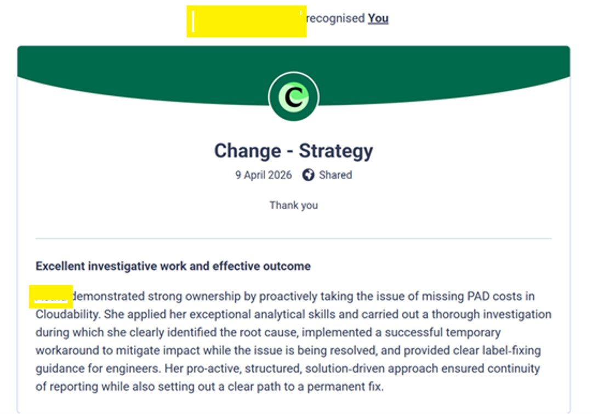
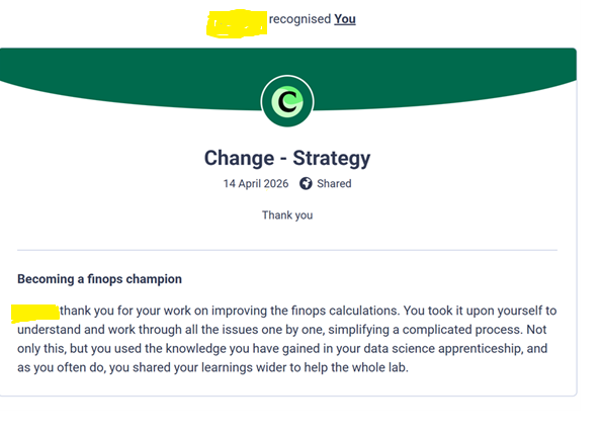

A workplace-based data project addressing recurring cloud-cost reporting discrepancies, manual reconciliation and forecast-confidence challenges.
Monthly cloud-cost forecasting relied on reconciling Cloudability reporting with FinOps forecast information. Recurring discrepancies increased manual investigation and created a risk that forecast issues would be identified late in the reporting cycle.
The problem involved more than simple numerical variance. Missing or misattributed cost lines, inconsistent App IDs and differences between Cloudability views and forecast records could all affect whether expenditure appeared in the expected reporting location.
The work therefore combined reconciliation, data-quality analysis, predictive modelling and decision-support visualisation rather than treating each discrepancy as an isolated operational incident.
The recurring reconciliation process was converted into a structured dataset suitable for analysis. Records were classified according to whether costs were matched across sources or whether an inconsistency required manual review.
App-ID and label completeness
Presence in Cloudability
Presence in the forecast source
Month-on-month cost change
Rolling cost volatility
Service category and environment
New-line-item indicators
Data-quality characteristics were treated as potential signals rather than simply being removed during cleaning.
For example, a missing App ID could itself indicate an attribution or governance problem and therefore contain useful information about the likelihood of reconciliation effort.
Logistic Regression was selected because the outcome was binary and because an interpretable probability-based model was more suitable for a governance context than an opaque prediction alone.
The analysis identified repeatable characteristics associated with higher discrepancy risk.
Missing or incorrect App IDs were strongly associated with discrepancy likelihood, reinforcing the importance of consistent attribution.
Items expected within forecasts but not visible in the relevant Cloudability reporting view represented an important reconciliation risk.
Larger month-on-month changes provided an additional signal that an item may require closer review.
Service category and environment provided further context for identifying areas where targeted governance controls may be appropriate.
The analytical work was translated into a dashboard structured around the questions different stakeholders needed to answer.
Provides rapid visibility of actual cost, forecast position and variance for governance discussions.
Helps Engineering and FinOps users locate where unexpected cost variance is concentrated.
Provides additional context for investigation and supports movement from high-level variance to likely underlying causes.
The most important evaluation principle was to distinguish evidence that had already been observed from benefits that remained projected.
| Impact area | Evidence | Status |
|---|---|---|
| Discrepancy detection | 83% recall at the selected 0.35 threshold | Measured |
| Root-cause understanding | Recurring identifier, visibility and volatility patterns were identified | Measured |
| Stakeholder value | Positive recognition was received from FinOps and Engineering leadership for investigation, ownership, solution design and communication | Observed |
| Reduced reconciliation effort | Risk-based prioritisation is expected to reduce avoidable manual review | Projected |
| Improved forecast confidence | Earlier discrepancy identification is expected to reduce late corrections | Projected |
Qualitative stakeholder evidence provides an additional view of impact beyond model-performance metrics. Recognition was received from FinOps and Engineering stakeholders following the Cloudability investigation and related improvements.
Formal recognition was received following investigation of missing cloud-cost information in Cloudability. The work involved identifying the underlying data-quality issue, supporting an interim workaround and providing guidance to maintain reporting continuity while a permanent resolution was pursued.

Figure 1. Redacted stakeholder recognition for analytical investigation, root-cause identification and continuity of cloud-cost reporting.
Further recognition highlighted the use of data-science knowledge to improve FinOps calculations, work through complex issues and share learning with the wider team. This provides evidence that the contribution extended beyond the immediate technical investigation.

Figure 2. Redacted stakeholder recognition for improving FinOps processes and sharing learning across the wider team.
A financial value should only be claimed once operational baseline data is available.
Additional measures should include time-to-insight, forecast variance, late-discrepancy counts, number of high-risk items requiring review, dashboard adoption and stakeholder usefulness.
If review effort does not reduce, forecast quality does not improve, or the false-positive workload becomes operationally unacceptable, the threshold and the wider business case should be reconsidered.
The model depends on historical discrepancy patterns. Improved data-quality controls may change the process that generated those patterns and therefore cause model drift.
Risk scores should prioritise investigation rather than automatically determine financial decisions.
Confidential organisational cost figures, identifiers and commercially sensitive information are not disclosed within this public portfolio.
Model performance, discrepancy prevalence, review workload and stakeholder usefulness should be monitored as the process is operationalised.
This project demonstrated how a recurring operational problem can be reframed as a structured data-quality and analytical problem.
The strongest outcome was not the model alone. Value was created by combining reconciliation knowledge, interpretable analytics, stakeholder engagement, dashboard design and practical governance recommendations.
It also reinforced the importance of making bounded business-impact claims. Measured outcomes and stakeholder evidence can be reported confidently, while future financial and time-saving benefits require baseline measurement before being presented as realised value.
← Back to Portfolio